일반기계기사 (2002-03-10 기출문제)
1과목: 재료역학
1. 금속재료의 인장시험 결과 얻어지는 극한응력을 옳게 설명 한 것은?
- 응력이 변형률과 비례하는 범위 중에서 응력의 최대값
- 항복이 발생하기 시작하는 응력값
- 공칭 응력-변형률 선도에서 응력의 최대값
- 재료의 파단점에서의 응력값
(정답률: 18%)

2. 그림과 같은 지름 d1, d2로된 두 봉에 축하중 P가 작용할 때 늘어난 길이의 비 δ1/δ2는 어느 것인가? (단, 두 봉의 탄성계 수는 같다고 한다.)
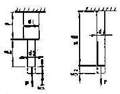
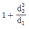
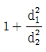
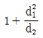
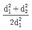
(정답률: 26%)
3. 단면적이 같은 원과 정사각형의 단면 계수의 비는?
- 1 : 0.509
- 1: 1.18
- 1 : 2.36
- 1 : 4.68
(정답률: 29%)
4. 그림과 같은 볼트에 축하중 Q가 작용할 때 볼트 머리부의 높이 H는 볼트 지름의 몇 배가되어야 하는가? (단, 볼트 머리부의 전단응력은 볼트 축에 작용하는 인장응력의 1/2 배까지 허용한다.)
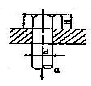
- 1/4배
- 3/5배
- 3/8배
- 1/2배
(정답률: 24%)
5. 길이 10m의 열차 레일이 0℃ 일 때 3mm의 간격을 두고 가설되었다. 온도가 35℃로 상승하면 응력은 얼마나 생기는가? (단, 열팽창계수 α=1.2×10-5/℃이고 탄성계수 E=210GPa이다.)
- 25.2 MPa 인장
- 36.5 MPa 인장
- 25.2 MPa 압축
- 36.5MPa 압축
(정답률: 19%)
6. 그림과 같은 삼걱형 분포하중을 받는 외팔보에서 최대 전단력과 최대 굽힘모멘트는?
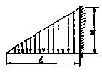
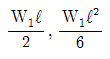
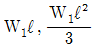
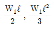
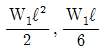
(정답률: 43%)
7. 그림과 같이 중앙에 집중하중 P[N]와 균일분포 하중 ω[N/m]가 동시에 작용하는 단순보에서 최대처짐은? (단, ωℓ = 2P이고, EI는 보의 굽힘강성계수이다.)
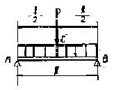
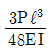
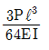
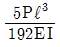
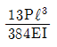
(정답률: 8%)
8. 단순지지보의 중앙에 집중하중 P가 작용하고 있을 때 최대처짐 δmax는?
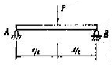
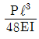
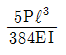
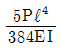
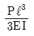
(정답률: 34%)
9. 그림의 2축 평면응력상태에 있는 요소에서 최대 전단응력의 값은? (문제 복원 오류로 문제 그림 내용이 정확하지 않습니다. 정확한 문제 내용을 아시는 분께서는 오류신고 또는 게시판에 작성 부탁드립니다.)
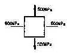
- 200MPa
- 400MPa
- 700MPa
- 1400MPa
(정답률: 18%)
10. 다음 그림과 같이 보에 여러 힘이 작용하고 있다. 보에 작용하고 있는 힘들을 점A에서 작용하는 힘과 우력으로 등가시킨다면, 이때 우력의 크기는?
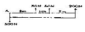
- 1250 N-m
- 1450 N-m
- 1750 N-m
- 2100 N-m
(정답률: 0%)
11. 카스틸리아노(Castigliano)의 정리를 옳게 설명한 것은?
- 변형 에너지는 주어진 힘에 비례한다.
- 변위는 변형과는 무관하다.
- 변형 에너지의 힘네 관한 도함수는 변위이다.
- 변형 에너지의 모멘트에 관한 도함수는 변위이다.
(정답률: 17%)
12. 지름 10cm의 양단 지지보의 중앙에 2kN의 집중 하중이 작용할 때 최대굽힘응력이 15MPa 이내가 되도록 하려면 보의 길이는 몇 cm이하로 하면 되겠는가?
- 151.5
- 294.5
- 351.3
- 224.3
(정답률: 31%)
13. 그림과 같은 양단이 지지된 단순보의 전길이에 4kN/m의 등분포하중이 작용할 때 중앙에서의 처짐이 0이 되기 위한 P의 값은 몇 kN인가?
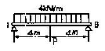
- 15
- 18
- 20
- 25
(정답률: 18%)
14. 지름이 1.5m인 두께가 얇은 원통용기에 1.6MPa의 압력을 갖는 가스를 넣으려고 한다. 필요한 벽두께는 얼마인가? (단, 허용응력은 80MPa이다.)
- 3.3cm
- 6.67cm
- 1.5cm
- 0.75cm
(정답률: 25%)
15. 길이 L=2.4m, 지름 d=3mm인 강선에 인장하중 P=850N이 작용할 때 강선의 신장량은 몇 cm인가? (단, 강선의 탄성계수 E=210GPa이다.)
- 0.117
- 0.127
- 0.137
- 0.147
(정답률: 30%)
16. 비틀림 모멘트 T를 받는 평균반지름이 rm이고 두께가 t인 원형단면 박판 튜브의 평균 전단응력은 얼마인가?
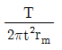
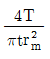
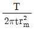
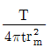
(정답률: 17%)
17. 원뿔대 형태의 주숫돌을 비중량 7500N/m3의 콘크리트로 만들었다. 주숫돌에서 바닥으로부터 높이 1m되는 부분에 작용되는 수직 응력은 몇 kPa인가?
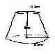
- 5.8
- 8.5
- 9.6
- 19.2
(정답률: 3%)
18. 그림과 같이 반지름이 5cm인 원형 단면의 ㄱ자 프레임 ABC에서 A점은 벽에 고정되어 있다. B점에 토크 T를 가하여 C점이 아래로 1mm 만큼 처지게 하려면, 필요한 토크의 크기는 몇 N-m인가?
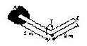
- 73
- 127
- 184
- 256
(정답률: 12%)
19. 그림과 같은 단면의 중립축에 대한 2차 모멘트는?(문제 오류로 그림이 너무 작고 정확하지 않습니다. 정답은 1번입니다.)
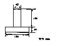
- 21.76×106 mm4
- 35.76×106 mm4
- 217.6×106 mm4
- 357.6×106 mm4
(정답률: 8%)
20. 지름이 0.1m이고 길이가 15m인 양단힌지의 원형강 장주의 좌굴임계하중은 몇 kN인가? (단, 장주의 탄성계수는 200GPa이다.)
- 43kN
- 55kN
- 67kN
- 79kN
(정답률: 25%)
2과목: 기계열역학
21. 열역학 제2법칙을 설명한 것 중 가장 적합한 것은?
- 에너지 보존의 원리를 제시한다.
- 온도계의 원리를 제공한다.
- 절데 영도에서의 엔트로피의 값을 제공한다.
- 어떤 과정이 일어날 수 있는가를 제시해 준다.
(정답률: 20%)
22. 10kg/cm2인 압력을 일정하게 유지하면서 0.6m3의 공기가 팽창하여 그 체적이 2배로 되었다. 외부에 대한 일량은 얼마인가?
- 72000kgf-m
- 60000kgf-m
- 56000kgf-m
- 48000kgf-m
(정답률: 30%)
23. 40℃의 공기가 400m/sec로 유동하고 있다면 마하수는? (단, 공기 비열비 k=1.4, 기체상숚=0.287kJ/kg∙K이다.)
- 1.128
- 1.276
- 1.324
- 1.457
(정답률: 19%)
24. 정압 비열이 0.8418kJ/kg∙K인 이상기체의 정적 비열은 약 얼마인가?
- 4.456kJ/kgㆍK
- 1.220 kJ/kgㆍK
- 1.031kJ/kgㆍK
- 0.653kJ/kgㆍK
(정답률: 29%)
25. 어떤 작동유체가 550K의 고열원으로부터 15kJ의 열량을 공급받아 250K의 저열원에 12kJ의 열량을 방출할 때 이 사이클은?
- 가역적이다.
- 비가역적이다.
- 가역 또는 비가역이다.
- 가역도 비가역도 아니다.
(정답률: 22%)
26. 227℃의 증기가 500kJ/kg의 열을 받으면서 가역등온팽창 한다. 엔트로피의 변화를 구하면?
- 1.0kJ/kgㆍK
- 1.5kJ/kgㆍK
- 2.5kJ/kgㆍK
- 2.8kJ/kgㆍK
(정답률: 37%)
27. 무게 7kg, 온도 600℃의 구리를 20℃, 8kg의 물속에 넣으면 물의 온도는 약 몇 ℃인가? (단, 구리의 비열은 0.386kJ/kg∙K 이며 물의 비령은 4.184kJ/kg∙K이다.)
- 46.3℃
- 54.3℃
- 63.3℃
- 72.3℃
(정답률: 33%)
28. 터빈을 통과하는 유체로서 물이 흐를 경우, 마찰열에 의 해물의 온도가 18℃에서 20℃로 상승하였다. 터빈에서 열전달은 없었다면, 터빈 통과 중 물의 엔트로피변화량을 구하시오. (단, 비열 C=4.184kJ/kg∙K이다.)
- 8.37kJ/kgㆍK
- 4.21kJ/kgㆍK
- 0.0287kJ/kgㆍK
- 0.0069kJ/kgㆍK
(정답률: 27%)
29. 대기압하에서 20℃의 물 1kg을 가열하여 같은 압력의 50℃의 과열 증기로 만들었다면, 이때 물이 흡수한 열량은 20℃와 150℃에서 어떠한 양의 차이로 표시되겠는가?
- 내부에너지
- 엔탈피
- 엔트로피
- 일
(정답률: 24%)
30. 어떤 이상 기체에서의 음속이 온도가 20℃일 때 300m/sec이라면 80℃일 때 음속은 얼마가 되겠는가?
- 약 275m/sec
- 약 329m/sec
- 약 420m/sec
- 약 520m/sec
(정답률: 33%)
31. 다음은 냉매로서 갖추어야 할 요구 조건이다. 이 중 부적당한 것은?
- 증발온도에서 높은 잠열을 가져야 한다.
- 열전도율이 커야 한다.
- 작동온도에서 포화압력이 높아야 한다.
- 불활성이고 안전하며 내가연성이어야 한다.
(정답률: 18%)
32. 산소 1kg과 질소 4kg이 혼합되어 체적 2m3의 용기에 25℃의 상태로 있을 때 이 용기내의 압력은 대체로 얼마인가? (단, 산소와 질소는 이상기체로 취급하고 기체상수는 각각 0.25983kJ/kg∙K, 0.29680kJ/kg∙K이다.)
- 207kPa
- 177kPa
- 216kPa
- 252kPa
(정답률: 28%)
33. 마노미터 속에 밀도가 800kg/m3인 유체가 들어있다. 두 기둥의 높이의 차가 300mm라고 할 때 몊 kPawjd도의 압력차를 나타내는가?
- 약 2.35
- 약 0.24
- 약 9.81
- 약 7.23
(정답률: 28%)
34. 재생과정을 도입하여 열효율 상승을 기대 할 수 있는 것은 어느 것인가?
- 카르노사이클
- 오토사이클
- 디젤사이클
- 브레이턴사이클
(정답률: 23%)
35. 공기 냉동기에서 압축기 입구 온도가 -5℃, 압축기 출구온도가 1⑤℃, 팽창기 입구 온도가 10℃, 팽창기 출구 온도가 -70℃일 때 이 냉동기의 성능계수는? (단, 공기의 Cp는 1.0035kJ/kg∙℃로서 일정하다.)
- 0.5
- 2.17
- 2.0
- 3.17
(정답률: 9%)
36. 디젤사이클에서 단절비(cut-off ratio)란?
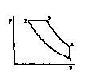
- V3/V2
- V2/V1
- V4/V3
- V3/V4
(정답률: 20%)
37. 메탄이 공기 중에서 완전 연소할 때 연료공기비를 구하면 어느 것에 가장 가까운가? (단, 공기는 체적비로 보아 21:79의 산소와 질소로 되어 있다.)
- 1:4.0
- 1:8.6
- 1:13.2
- 1:17.2
(정답률: 6%)
38. 150kg의 물을 18℃에서 100℃로 가열하는데 요하는 열량은? (단, 물의 비열은 4.184kJ/kg∙K이다.)
- 51463kJ
- 52336kJ
- 100400kJ
- 209200kJ
(정답률: 35%)
39. 랭킨(Rankine)사이클에서 상태 변화가 정적변화이면서 동시에 단열변화가 일어나는 곳은?
- 보일러
- 펌프
- 터빈
- 복수기
(정답률: 15%)
40. 다음 중 열역학 제1법칙과 관계가 가장 먼 것은?
- 밀폐계가 임의의 사이클을 이룰 때 열전달의 합은 이루어진 일의 총합과 같다.
- 열은 본질적으로 일과 동일한 에너지의 일종으로서 열을 일로 변환할 수 있고 또한 그 역도 가능하다.
- 어떤 계가 임의의 사이클을 겪는 동안 그 사이클에 따라 열을 적분한 것이, 그 사이클에 따라서 일을 적분한 것에 비례한다.
- 두 물체가 제3의 물체와 온도의 동등성을 가질 때는 두 물체도 역시 서로 온도의 동등성을 갖는다.
(정답률: 33%)
3과목: 기계유체역학
41. 프로펠러에서 상류의 유속을 u0, 하류의 유속을 u2라 하면 그 추진력 F는 얼마인가? (단, 유체의 밀도와 유량 및 비중량을 ρ, Q, γ라 한다.)
- F=ρQ(u2-u0)
- F=ρQ(u0-u2)
- F=γQ(u2-u0)
- F=γQ(u0-u2)
(정답률: 22%)
42. 그림과 같이 비중 0.85인 기름이 흐르고 있는 개수로에 피토우관을 설치했다. △h=30mm,h=100mm일 때 유속은?
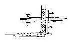
- 0.767m/sec
- 0.976m/sec
- 6.25m/sec
- 1.59m/sec
(정답률: 24%)
43. 점성계수의 단위 중에서 옳은 것은?
- dyneㆍsec/cm2
- kg/cmㆍs2
- kgㆍs/cm
- dyneㆍcm/sec2
(정답률: 31%)
44. 다음 △P, L, ρ, Q를 결합했을 때 무차원 항은? (단, △P: 압력차, ρ: 밀도, L: 길이, Q: 유량이다.)
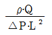
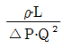
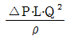
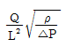
(정답률: 22%)
45. x, y평면에 2차원 비회전 유동장에서 유동함수(Stream function)
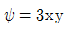
로 주어진다. 점(6, 2)과 점(4, 2) 사이를 흐르는 단위 깊이당의 유량은?- 6
- 12
- 16
- 24
(정답률: 17%)
46. 수면에서 깊이 H인 오리피스에서 유출하는 물의 속도수두는? (단, 유속계수를 Cv라 한다.)
- CvH
- Cv/H
- Cv2/H
- Cv2H
(정답률: 9%)
47. 경계층 내의 속도 분포가 u/U∞=y/δ 일 때, 마찰계수 Cf는? (단, U∞는 자유흐름속도, δ는 경계층두께이고 v는 동점성계수이다.)
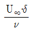
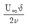
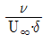
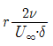
(정답률: 0%)
48. 지름이 3⑤mm이고, 길이가 3048m인 주철관으로 오일이 초 당 44.4×10-3m3 정도로 흐르고 있다면 층류 유동일 경우 주 철관에서의 손실수두는 몇 m인가?
- 7.63
- 10.53
- 4.63
- 5.53
(정답률: 3%)
49. 부차적 손실계수 값이 5인 밸브를 Darcy의 관마찰계수가 0.025이고 지름이 2cm인 관으로 환산한다면 관의 등가길이는 몇 m인가?
- 4
- 0.4
- 2.5
- 0.25
(정답률: 23%)
50. U-자관 마노미터에 유체A와 유체B가 그림과 같이 채워져있다. 유체A와 유체B의 밀도비 ρA/ρB는 얼마인가?
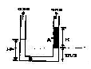
- 1/3
- 2/3
- 3/2
- 3
(정답률: 3%)
51. 1변이 2m인 위가 열려있는 정육면체 통에 물을 가득 담아 수평방향으로 9.8m/sec2의 가속도로 잡아 끌 때 통에 남아 있는 물의 양은 얼마인가?
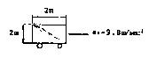
- 8m3
- 4m3
- 2m3
- 1m3
(정답률: 19%)
52. 길이 150m인 배를 길이 10m인 모형으로 조파저항에 관한 실험을 하고자 한다. 실형의 배가 70km/hr로 움직인다면, 실형과 모형 사이의 역학적 상사를 만족하려면 모형의 속도는 몇 km/hr로 하여야 하는가?
- 10
- 56
- 18
- 271
(정답률: 29%)
53. 그림과 같은 수조에서 파이프를 통하여 흐르는 유량(Q)은 몇 m3/sec인가? (단, 마찰손실 무시)
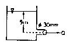
- 9.39×10-3
- 1.25×10-4
- 0.939
- 0.125
(정답률: 10%)
54. 다음 식 중 질량 보존을 표현 것으로 적절하지 못한 것은? (단, ρ는 유체의 밀도, A는 관의 단면적, V는 유체의 속도이다.)
- ρAv=0
- ρAv=일정
- d(ρAv)=0
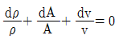
(정답률: 26%)
55. 직경 10cm인 수평원관내에서 물을 평균속도 2m/sec로 거리 10km를 이송시키려면 최소한 몇 kW의 동력을 공급하여야 하는가? (단, 관마찰계수는 0.03이며 관입구와 출구에서의 손실은 무시한다.)
- 94.2
- 47.1
- 188.4
- 23.5
(정답률: 9%)
56. 다음 중 비압축성 유체에 관하여 바르게 설명한 것은?
- 유체 내의 모든 곳에서 압력이 일정하다.
- 유체의 속도나 압력의 변화에 관계 없이 밀도가 일정하다.
- 모든 실제 유체를 말한다.
- 액체만을 말한다.
(정답률: 20%)
57. 최고 6m/sec의 속도로 공기 0.25kg/sec(질량유량)를 흐르도록 하는데 필요한 최소 관지름은 몇 m인가? (단, 공기는 27℃로서 기체상수는 28N∙m/kg∙K이며, 2.3×105Pa의 절대압력 상태에 있다.)
- 0.14
- 1.4
- 0.0156
- 0.156
(정답률: 3%)
58. 동점성계수가 13.68×10-6m2/sec인 공기가 매끈한 평판 위를 1.4m/sec의 속도로 흐르고 있을 때 선단으로부터 20cm 되는 곳에서의 레이놀즈수는? (문제 오류로 정답이 없습니다. 정확한 정답을 아시는 분께서는 오류 신고를 통하여 작성 부탁 드립니다. 여기서는 가번을 누르면 정답처리됩니다.)
- 20468
- 292398
- 137931
- 2046783
(정답률: 12%)
59. 다음 중에서 2차원 비압축성 유동의 연속방정식을 만족하지 않는 속도벡터는?
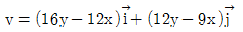
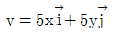
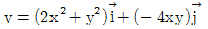
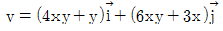
(정답률: 14%)
60. 압력계의 눈금이 400kPa를 나타내고 있다. 이때 실험실에 놓여진 수은 기압계에서 수은의 높이는 750mm이였다. 이때 절대압력은 몇 kPa인가?
- 300
- 500
- 410
- 600
(정답률: 22%)
4과목: 기계재료 및 유압기기
61. 다음 중 유압 장치의 주요 구성요소가 아닌 것은?
- 동력원(Power Unit)
- 연결부(Connection Unit)
- 제어부(Control Unit)
- 구동부(Actuator)
(정답률: 44%)
62. 철강재료의 열처리에서 많이 이용되는 S곡선이란 어떤 것을 의미하는가?
- T∙T∙S 곡선
- C∙C∙T 곡선
- T∙T∙T 곡선
- S∙T∙S 곡선
(정답률: 54%)
63. 고망간강의 특성으로 가장 적당한 것은?
- 내마모성강
- 전연성강
- 내부식성강
- 탄성강
(정답률: 44%)
64. 유압장치에서 조작 사이클의 일부에서 짧은 행정 또는 순간적으로 고압을 필요로 할 경우에 사용하는 회로는?
- 감압회로
- 로킹회로
- 증압회로
- 동기회로
(정답률: 42%)
65. 다음 중 유압 작동유가 구비하여야 할 조건이 되지 못하는 것은?
- 넓은 온도변화에 대하여 점도변화가 작을 것
- 적당한 유막 강도가 있고 윤활성이 좋을 것
- 투명도가 높고 독특한 색을 가질 것
- 공기의 흡수도가 많을 것
(정답률: 44%)
66. 보기와 같은 유압기호의 명칭은?
- 기름탱크
- 어큐물레이터
- 압력스위치
- 급속배기밸브
(정답률: 43%)
67. 유압회로 내의 압력이 설정 압을 넘으면 유압에 의하여 막이 파열되어 유압유를 탱크로 귀환시키며, 압력 상승을 막아 기기를 보호하는 역할을 하는 유압 요소는?
- 압력 스위치
- 유체퓨즈
- 언로드 밸브
- 포핏 센서
(정답률: 37%)
68. 유압기기의 작동유체로서 물과 기름을 설명한 것으로 틀린 것은?
- 기름은 윤활성이 있어 수명이 길다.
- 물은 녹이 잘 슬고, 고압에서 누설이 쉽다.
- 물은 점성이 적거, 마모도 촉진하게 되므로 특별한 재료를 사용해야 한다.
- 기름은 열에 민감하나 녹이 잘 슬고 마모의 촉진이 쉽다.
(정답률: 60%)
69. 다음 중 탄소공구강 및 일반공구강 재료로써 구비 조건이 아닌 것은?
- 상온 및 고온 경도가 클 것
- 내마모성이 작을 것
- 가공 및 열처리성이 양호할 것
- 강인성 및 내충격성이 우수할 것
(정답률: 63%)
70. 다음 중 스프링 강의 기호를 나타내는 것은 어느 것인가?
- SCM1
- SNCM1
- SPS1
- SKS1
(정답률: 50%)
71. 차량, 건축 등에 사용되는 구조용 강으로 듀콜강(ducole steel)이란?
- 저 망간강
- 저 코발트강
- 고크롬강
- 고 니켈강
(정답률: 40%)
72. 영구 자석강으로 갖추어야 할 조건들 중 가장 적당한 것은?
- 자기적으로 연하고 잔류자속 밀도와 보자력이 작을 것
- 자기적으로 경하고 잔류자속 밀도가 크고 보자력이 작을 것
- 잔류자속 밀도 및 보자력이 크고 기계적 경도가 클 것
- 잔류자속 밀도가 작고 보자력이 크고 기계적 경도가 클 것
(정답률: 53%)
73. 압력이 70kgf/cm2, 토출 유량이 80ℓ/min인 유압 펌프의 전체 효율 이 90%일 때 펌프의 구동에 필요한 최소의 동력(kW)은?
- 8.2
- 9.2
- 10.2
- 11.2
(정답률: 3%)
74. 다음 그림은 탄소와 규소의 양에 따른 마우러의 조직도 (Maurer's diagram)이다. 기계구조용 주철로서 가장 우수한 성질을 나타내는 펄라이트 주철의 범위는?
- Ⅰ
- Ⅱ
- Ⅱb
- Ⅲ
(정답률: 12%)
75. 유압실린더의 부하가 갑자기 감소하여 피스톤이 급진하는 것을 방지하거나, 피스톤이나 램의 자유낙하를 방지하기 위한 밸브는?
- 시퀀스 밸브
- 카운터 밸런스 밸브
- 파일럿 조작 방향제어 밸브
- 압력 보상형 유량제어 밸브
(정답률: 60%)
76. 안지름 0.1m인 파이프 내를 평균유속은 5m/sec로 물이 흐르고 있다. 배관길이 10m 사이에 나타나는 손실수두는 약 몇 m 인가?(단, 관마찰계수는 0.013 이다.)
- 1m
- 1.7m
- 3.3m
- 4m
(정답률: 31%)
77. 다음 합금 중에서 시효경화성이 있는 주물용 알루미늄 합금은?
- 실루민
- Al-Cu계 합급
- 두랄루민
- 모넬메탈
(정답률: 11%)
78. 실용되는 금속 재료 중 비중이 1.74로서 가장 가벼운 금속은 다음 중 어느 것인가?
- Al
- Mg
- Ti
- Si
(정답률: 53%)
79. 기름의 압축율이 6.8×10-5cm2/kgf 일 때 압력을 0에서 200kgf/cm2까지 압축하면 체적은 몇 %감소하는가?
- 0.34%
- 1.36%
- 1.85%
- 0.014%
(정답률: 40%)
80. 탭, 다이스, 쇠톱날, 정 등의 용도인 탄소공구강 STC3종의 탄소함유량으로 가장 적당한 것은?
- 0.45～0.6%
- 0.6～0.8%
- 1.0～1.1%
- 1.8～2.3%
(정답률: 23%)
5과목: 기계제작법 및 기계동력학
81. 그림과 같은 진동계에서 상당 스프링계수 k는?
- k=k1+k2
- k=k1×k2
- k=k1/k2
(정답률: 26%)
82. 탄송계수 E=2.1×1011N/m2, 비중량 γ=7.8×107N/m3인 어떤 봉의 종진동 파동속도는?
- 5090 m/sec
- 162.5 m/sec
- 518 m/sec
- 508.7 m/sec
(정답률: 6%)
83. 질량 10g의 물체가 진폭이 24cm이고 주시 4sec의 단진동을 할 때 t=0에서의 좌표가 +24cm이면 t=0.5sec 일 때의 물체의 위치는?
- 12cm
- 17cm
- 24cm
- 42cm
(정답률: 20%)
84. 다음 탭의 설명 중에서 옳은 것은?
- 1/16 테이퍼의 파이프탭은 기밀을 필요로 하는 부분에 태핑을 하는데 쓰인다.
- 핸드탭등경 1번 탭으로 나사를 깎을 때에는 탭구멍 입구에 코떼기 할 필요가 없다.
- 핸드탭등경 1번탭은 약간에 테이퍼를 주어 탭구멍에 잘 들어가게 하며 이 테이퍼부는 절삭을 하지 않고 나사부의 안내가 된다.
- 탭의 드릴 사이즈 d는 나사의 호칭 지름을 D, 피치를 p라고 하면 d=D-3p로 계산된다.
(정답률: 14%)
85. 그림과 같이 하단에 원판이 달려 있는 연직축이 있다. 원판면 내에 토크를 가했다가 급히 제거했을 때의 비틀림 진동의 주기는?
(정답률: 12%)
86. 두께가 2mm, C=0.2%의 경질 탄소강판에 지름25mm의 구멍을 펀치로 뚫을 때, 전단하중 P=3140kgf라면 이때 전단응력은 얼마인가?
- 약20kgf/mm2
- 약25kgf/mm2
- 약30kgf/mm2
- 약40kgf/mm2
(정답률: 42%)
87. 어떤 진동 측정 장치가 측정한 단순조화운동을 하는 물체의 진동주파수는 480Hz이고, 최대 가속도는 5m/sec2이었다. 이 물체의 진동으로 인한 최대 변위값은?
- 0.⑤5mm
- 0.55mm
- 5.5μm
- 0.55μm
(정답률: 17%)
88. 방전가공에서 가장 기본적인 회로는?
- RC회로
- 트랜지스터 회로
- 양펄스 발전기회로
- 고전압법 회로
(정답률: 27%)
89. 프레스를 이용한 단조에서 유효 단조 면적이 150cm2, 가공 재료의 변형저항이 20kg/mm2, 기계효율을 80%로 하면 프레스의 용량은?
- 3750kg
- 37500kg
- 24ton
- 375ton
(정답률: 24%)
90. 박스지그는 주로 어떤 작업에 가장 많이 사용되는가?
- 연삭기에 테이퍼 작업을 다량으로 할 때
- 선반작업에서 크랭크를 절삭할 때
- 보링 작업을 할 때
- 드릴작업에서 다량 생산할 때
(정답률: 24%)
91. 그림과 같이 작업할 모재의 한쪽에 긴 구멍을 뚫고, 판의 표면까지 가득히 용접하여 다른 모재의 접합하는 용접은?
- 맞대기 용접
- 겹치기 용접
- 덮개한 용접
- 플러그 용접
(정답률: 20%)
92. m1, k1으로 구성된 진동계의 진동을 줄이기 위해 그림과 같이 동흡진기를 부착하려고 한다. 동흡진기에 사용할 k2의 값으로 적당한 것은?
- m1ω2
- m2ω2
- (m1+m2)ω2
(정답률: 6%)
93. 전달율이 로 표시될 때 전달율이 1보다 큰 값을 갖는 범위는?
(정답률: 24%)
94. 빌트 업에지(구성인선)의 발생방지 대책은?
- 절삭깊이, 이송속도를 크게 한다.
- 바이트 윗면 경사각을 크게 하고 절삭속도를 높인다.
- 절삭 속도를 느리게 하고 절삭 깊이 및 이송 속도를 크게하고 윤활성이 좋은 윤활유를 사용한다.
- 바이트의 윗면 경사각을 작게 한다.
(정답률: 36%)
95. 다음 1자유도 점성감쇠계에서 공진점에서 입력 F(t)와 변위 응답 x(t)와의 위상차는?
- 0˚
- 90˚
- 180˚
- 270˚
(정답률: 20%)
96. 밀링에서 하향 절삭의 잇점이 아닌 것은?
- 커터날의 마멸이 적다.
- 다듬질 표면이 양호하다.
- 절삭저항이 작아 커터날이 부러지지 않는다.
- 일감을 밑으로 누르므로 고정이 간편하다.
(정답률: 25%)
97. 청동 주조를 위하여 주입할 때 두드러지게 나타나는 편석은 어느 것인가?
- 정상편석
- 중력편석
- 역편석
- 미시적편석
(정답률: 17%)
98. 탄소강의 열처리에 영향을 가장 적게 주는 요소는?
- 탄소함유량
- 가열온도
- 가공시간
- 가열방법
(정답률: 31%)
99. 대수 감쇠율이 3인 1자유도계의 감쇠비는?
- 0.131
- 0.231
- 0.431
- 0.831
(정답률: 30%)
100. 양단이 베어링에 의해 지지된 축의 중앙에 편심 거리가 e인 원판이 부착되었다. 축의 회전속도를 위험 속도보다 10% 크게 하면 축의 최대 변위는 얼마인가?
- 1.21e
- 3.27e
- 5.23e
- 5.76e
(정답률: 3%)